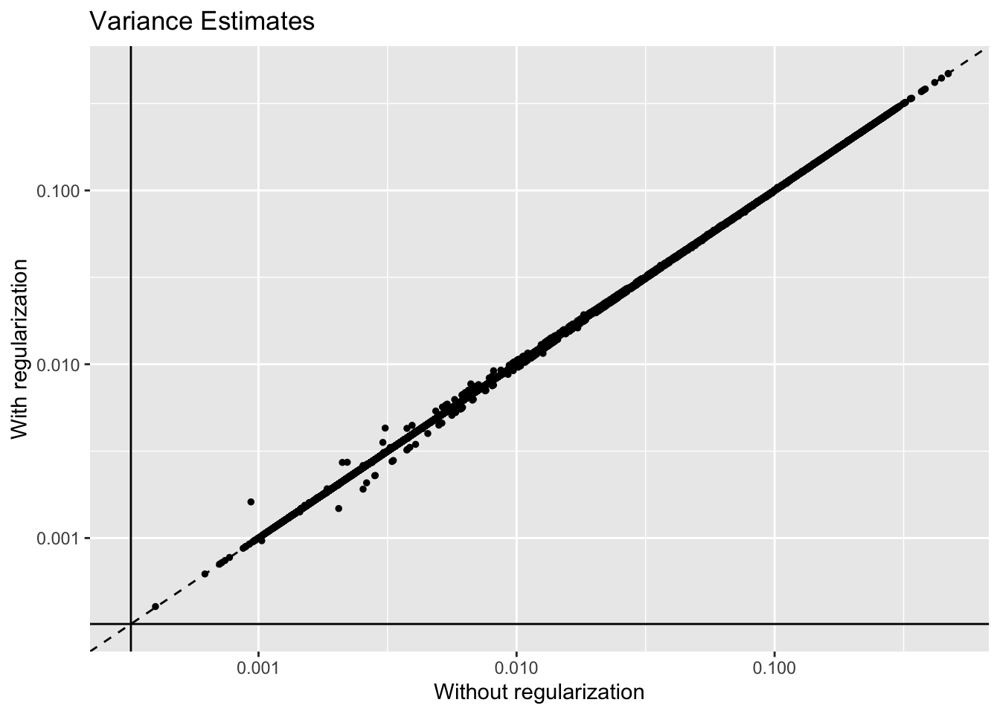
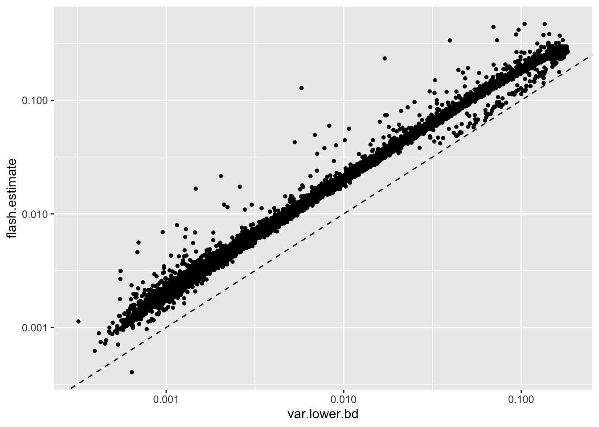
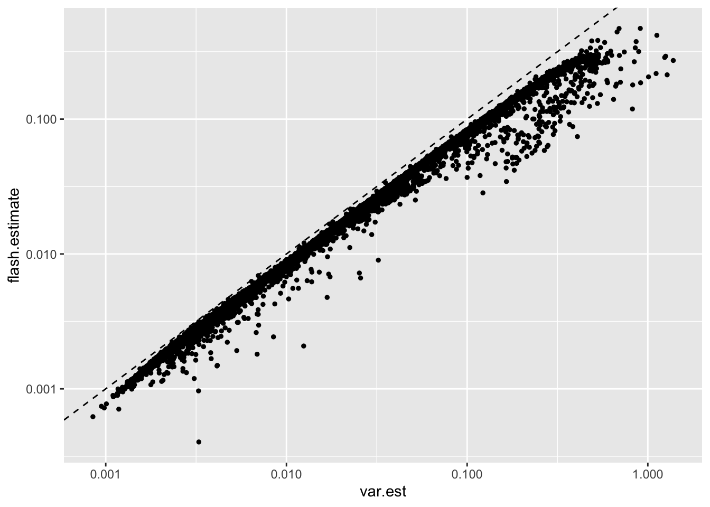

Last updated: 2020-03-13
Checks: 6 0
Knit directory: scFLASH/
This reproducible R Markdown analysis was created with workflowr (version 1.2.0). The Report tab describes the reproducibility checks that were applied when the results were created. The Past versions tab lists the development history.
Great! Since the R Markdown file has been committed to the Git repository, you know the exact version of the code that produced these results.
Great job! The global environment was empty. Objects defined in the global environment can affect the analysis in your R Markdown file in unknown ways. For reproduciblity it’s best to always run the code in an empty environment.
The command set.seed(20181103) was run prior to running the code in the R Markdown file. Setting a seed ensures that any results that rely on randomness, e.g. subsampling or permutations, are reproducible.
Great job! Recording the operating system, R version, and package versions is critical for reproducibility.
Nice! There were no cached chunks for this analysis, so you can be confident that you successfully produced the results during this run.
Great! You are using Git for version control. Tracking code development and connecting the code version to the results is critical for reproducibility. The version displayed above was the version of the Git repository at the time these results were generated.
Note that you need to be careful to ensure that all relevant files for the analysis have been committed to Git prior to generating the results (you can use wflow_publish or wflow_git_commit). workflowr only checks the R Markdown file, but you know if there are other scripts or data files that it depends on. Below is the status of the Git repository when the results were generated:
Ignored files:
Ignored: .DS_Store
Ignored: .Rhistory
Ignored: .Rproj.user/
Ignored: code/initialization/
Ignored: data-raw/10x_assigned_cell_types.R
Ignored: data/.DS_Store
Ignored: data/10x/
Ignored: data/Ensembl2Reactome.txt
Ignored: data/droplet.rds
Ignored: data/mus_pathways.rds
Ignored: output/backfit/
Ignored: output/final_montoro/
Ignored: output/lowrank/
Ignored: output/prior_type/
Ignored: output/pseudocount/
Ignored: output/pseudocount_redux/
Ignored: output/size_factors/
Ignored: output/var_reg/
Ignored: output/var_type/
Untracked files:
Untracked: analysis/NBapprox.Rmd
Untracked: analysis/trachea4.Rmd
Untracked: code/alt_montoro/
Untracked: code/missing_data.R
Untracked: code/pulseseq/
Untracked: code/trachea4.R
Untracked: output/alt_montoro/
Untracked: output/pulseseq_fit.rds
Unstaged changes:
Modified: data-raw/pbmc.R
Note that any generated files, e.g. HTML, png, CSS, etc., are not included in this status report because it is ok for generated content to have uncommitted changes.
These are the previous versions of the R Markdown and HTML files. If you’ve configured a remote Git repository (see ?wflow_git_remote), click on the hyperlinks in the table below to view them.
| File | Version | Author | Date | Message |
|---|---|---|---|---|
| Rmd | bd7168f | Jason Willwerscheid | 2020-03-13 | wflow_publish(“analysis/var_reg_pbmc2.Rmd”) |
| html | 22ca2b2 | Jason Willwerscheid | 2020-03-13 | Build site. |
| Rmd | 0608852 | Jason Willwerscheid | 2020-03-13 | wflow_publish(“analysis/var_reg_pbmc2.Rmd”) |
| html | 73c62dd | Jason Willwerscheid | 2020-03-12 | Build site. |
| Rmd | f8991ba | Jason Willwerscheid | 2020-03-12 | wflow_publish(“./analysis/var_reg_pbmc2.Rmd”) |
In a previous analysis, I put a prior on the residual variance parameters to prevent them from going to zero during the backfit (in the past, I had just been thresholding them). I fixed the prior rather than estimating it using empirical Bayes: as it turns out, the latter is simply not effective (I tried a range of prior families, including exponential and gamma priors).
Here, I combine the two approaches. I reason about Poisson mixtures to set a minimum threshold and then, after thresholding, I use empirical Bayes to shrink the variance estimates towards their mean.
As in the previous analysis, all fits add 20 factors greedily using point-normal priors and then backfit. Here, however, I don’t “pre-scale” cells (that is, I scale using library size normalization, but I don’t do any additional scaling based on cell-wise variance estimates). The code used to produce the fits can be viewed here.
The “true” distribution of gene \(j\) can be modeled as \[ X_{ij} \sim \text{Poisson}(s_i \lambda_{ij}), \] where \(s_i\) is the size factor for cell \(i\) and \(\lambda_{ij}\) depends on, for example, cell type. Using a Taylor approximation, the transformed entry \(Y_{ij} = \log(X_{ij} / s_i + 1)\) can be written \[ Y_{ij} \approx \log(\lambda_{ij} + 1) + \frac{1}{s_i(\lambda_{ij} + 1)}(X_{ij} - s_i \lambda_{ij}) - \frac{1}{2s_i^2(\lambda_{ij} + 1)^2}(X_{ij} - s_i \lambda_{ij})^2 \] so that \[ \mathbb{E}Y_{ij} \approx \log(\lambda_{ij} + 1) - \frac{\lambda_{ij}}{2s_i(\lambda_{ij} + 1)^2}\] and \[ \text{Var}(Y_{ij}) \approx \frac{\lambda_{ij}}{s_i(\lambda_{ij} + 1)^2}\]
The law of total variance gives a simple lower bound: \[ \text{Var}(Y_j) \ge \mathbb{E}_i(\text{Var}(Y_{ij})) \approx \frac{1}{n} \sum_{i} \frac{\lambda_{ij}}{s_i(\lambda_{ij} + 1)^2} \] Plugging in the estimator \(\hat{\lambda}_{ij} = X_{ij} / s_i\): \[ \text{Var}(Y_j) \ge \frac{1}{n} \sum_i \frac{X_{ij}}{s_i^2(\exp(Y_{ij}))^2} \]
Thus a reasonable lower bound for the residual variance estimates is \[ \min_j \frac{1}{n} \sum_i \frac{X_{ij}}{s_i^2(\exp(Y_{ij}))^2} \]
I’ll use the family of gamma priors, since they have the advantage of being fast (unlike gamma and exponential mixtures) and yet flexible (as compared to one-parameter exponential priors).
The regularization step doesn’t seem to be hugely important. Variance estimates are very similar with and without it (the solid lines indicate the threshold):
suppressMessages(library(tidyverse))
suppressMessages(library(Matrix))
source("./code/utils.R")
orig.data <- readRDS("./data/10x/pbmc.rds")
pbmc <- preprocess.pbmc(orig.data)
res <- readRDS("./output/var_reg/varreg_fits2.rds")
var_df <- tibble(thresholded = res$unreg$fl$residuals.sd^2,
regularized = res$reg$fl$residuals.sd^2)
ggplot(var_df, aes(x = thresholded, y = regularized)) +
geom_point(size = 1) +
scale_x_log10() +
scale_y_log10() +
geom_abline(slope = 1, linetype = "dashed") +
ggtitle("Variance Estimates") +
labs(x = "Without regularization", y = "With regularization") +
geom_vline(xintercept = 1 / res$unreg$fl$flash.fit$given.tau) +
geom_hline(yintercept = 1 / res$unreg$fl$flash.fit$given.tau)
The regularized fit is slower, but it does a bit better with respect to both the ELBO (surprisingly!) and the log likelihood of the implied discrete distribution.
res_df <- tibble(Fit = c("Without Regularization", "With Regularization"),
ELBO = sapply(res, function(x) x$fl$elbo),
Discrete.Llik = sapply(res, function(x) x$p.vals$llik),
Elapsed.Time = sapply(res, function(x) x$elapsed.time))
knitr::kable(res_df, digits = 0)| Fit | ELBO | Discrete.Llik | Elapsed.Time |
|---|---|---|---|
| Without Regularization | 32325446 | -12497124 | 740 |
| With Regularization | 32326656 | -12496881 | 1190 |
The argument I made above can in fact be applied gene by gene. That is, I can impose a gene-wise threshold rather than a single threshold for all genes: \[ \text{Var}(Y_j) \ge \frac{1}{n} \sum_i \frac{X_{ij}}{s_i^2(\exp(Y_{ij}))^2} \]
Indeed, I could go a bit further and estimate the sampling variance directly rather than calculating a rough lower bound: \[ \text{Var}(Y_j) = \mathbb{E}_i(\text{Var}(Y_{ij})) + \text{Var}_i(\mathbb{E} Y_{ij})
\approx \frac{1}{n} \sum_{i} \frac{\lambda_{ij}}{s_i(\lambda_{ij} + 1)^2}
+ \text{Var}_i \left( \log(\lambda_{ij} + 1)
- \frac{\lambda_{ij}}{2s_i(\lambda_{ij} + 1)^2} \right) \] The problem, however, is that if the “true” rate \(\lambda_{ij}\) is the same for all \(i\) (and, for the sake of argument, let all \(s_i\) be identical), then \(\text{Var}_i(\mathbb{E} Y_{ij})\) should be zero. If, however, the plug-in estimators \(\hat{\lambda}_{ij} = X_{ij} / s_i\) are used, then \(\text{Var}_i(\mathbb{E} Y_{ij})\) will be estimated as positive and the residual variance estimate for gene \(j\) risks being too large. For this reason, I think that the best one can do is to use the rough lower bound and then let flash estimate the residual variance.
Note, however, that all but one flash estimate is already greater than this lower bound (for this reason, I won’t bother to re-fit):
tmp.mat <- t(t(orig.data[-pbmc$dropped.genes, ] / (exp(pbmc$data))^2) / pbmc$size.factors^2)
var.lower.bd <- apply(tmp.mat, 1, mean)
var.est <- var.lower.bd + apply(pbmc$data - 0.5 * tmp.mat, 1, var)
var_df <- tibble(flash.estimate = res$reg$fl$residuals.sd^2,
var.lower.bd = var.lower.bd,
var.est = var.est)
ggplot(var_df, aes(x = var.lower.bd, y = flash.estimate)) +
geom_point(size = 1) +
scale_x_log10() +
scale_y_log10() +
geom_abline(slope = 1, linetype = "dashed")
| Version | Author | Date |
|---|---|---|
| 22ca2b2 | Jason Willwerscheid | 2020-03-13 |
In contrast, all of the flash estimates are lesser than the direct sampling variance estimate obtained using plug-in estimators, which strongly suggests that this approach would be inappropriate:
ggplot(var_df, aes(x = var.est, y = flash.estimate)) +
geom_point(size = 1) +
scale_x_log10() +
scale_y_log10() +
geom_abline(slope = 1, linetype = "dashed")
| Version | Author | Date |
|---|---|---|
| 22ca2b2 | Jason Willwerscheid | 2020-03-13 |
Factor plots are nearly identical with and without regularization. I like regularization on principle, but I’m not sure that it actually makes much of a difference.
set.seed(666)
plot.factors(res$unreg, pbmc$cell.type, kset = order(res$unreg$fl$pve, decreasing = TRUE),
title = "Without regularization")
set.seed(666)
plot.factors(res$reg, pbmc$cell.type, kset = order(res$reg$fl$pve, decreasing = TRUE),
title = "With regularization")
sessionInfo()R version 3.5.3 (2019-03-11)
Platform: x86_64-apple-darwin15.6.0 (64-bit)
Running under: macOS Mojave 10.14.6
Matrix products: default
BLAS: /Library/Frameworks/R.framework/Versions/3.5/Resources/lib/libRblas.0.dylib
LAPACK: /Library/Frameworks/R.framework/Versions/3.5/Resources/lib/libRlapack.dylib
locale:
[1] en_US.UTF-8/en_US.UTF-8/en_US.UTF-8/C/en_US.UTF-8/en_US.UTF-8
attached base packages:
[1] stats graphics grDevices utils datasets methods base
other attached packages:
[1] flashier_0.2.4 Matrix_1.2-15 forcats_0.4.0 stringr_1.4.0
[5] dplyr_0.8.0.1 purrr_0.3.2 readr_1.3.1 tidyr_0.8.3
[9] tibble_2.1.1 ggplot2_3.2.0 tidyverse_1.2.1
loaded via a namespace (and not attached):
[1] Rcpp_1.0.1 lubridate_1.7.4 lattice_0.20-38
[4] assertthat_0.2.1 rprojroot_1.3-2 digest_0.6.18
[7] foreach_1.4.4 truncnorm_1.0-8 R6_2.4.0
[10] cellranger_1.1.0 plyr_1.8.4 backports_1.1.3
[13] evaluate_0.13 httr_1.4.0 highr_0.8
[16] pillar_1.3.1 rlang_0.4.2 lazyeval_0.2.2
[19] pscl_1.5.2 readxl_1.3.1 rstudioapi_0.10
[22] ebnm_0.1-24 irlba_2.3.3 whisker_0.3-2
[25] rmarkdown_1.12 labeling_0.3 munsell_0.5.0
[28] mixsqp_0.3-17 broom_0.5.1 compiler_3.5.3
[31] modelr_0.1.5 xfun_0.6 pkgconfig_2.0.2
[34] SQUAREM_2017.10-1 htmltools_0.3.6 tidyselect_0.2.5
[37] workflowr_1.2.0 codetools_0.2-16 crayon_1.3.4
[40] withr_2.1.2 MASS_7.3-51.1 grid_3.5.3
[43] nlme_3.1-137 jsonlite_1.6 gtable_0.3.0
[46] git2r_0.25.2 magrittr_1.5 scales_1.0.0
[49] cli_1.1.0 stringi_1.4.3 reshape2_1.4.3
[52] fs_1.2.7 doParallel_1.0.14 xml2_1.2.0
[55] generics_0.0.2 iterators_1.0.10 tools_3.5.3
[58] glue_1.3.1 hms_0.4.2 parallel_3.5.3
[61] yaml_2.2.0 colorspace_1.4-1 ashr_2.2-38
[64] rvest_0.3.4 knitr_1.22 haven_2.1.1